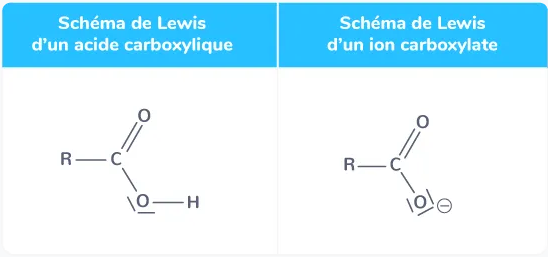

Dans la théorie de Brönsted, un acide est une espèce chimique pouvant céder un ion hydrogène $\ce{H+}$ (ou proton) et une base est une espèce chimique pouvant en capter. Lorsqu'un acide et une base sont liés par un échange d'ions hydrogène $ \ce{H+} $, on dit qu'ils sont conjugués et ils constituent un couple acide-base. À chaque couple acide-base correspond une demi-équation acidobasique illustrant le transfert d'ions hydrogène.
Dans la théorie de Brönsted, un acide est une espèce chimique pouvant céder un ion hydrogène \( \ce{H+} \) et une base est une espèce chimique pouvant en capter un.
Un acide de Brönsted est une espèce chimique susceptible de céder un ion hydrogène \( \ce{H+} \) (ou proton).
L'acide nitrique \( \ce{HNO3} \) est un acide au sens de Brönsted car, dans l'eau, cette molécule cède un ion hydrogène en se dissociant en ion hydrogène \( \ce{H+} \) et en ion nitrate \( \ce{NO3^{-}} \).
Une base de Brönsted est une espèce chimique susceptible de capter un ion hydrogène \( \ce{H+} \) (ou proton).
L'ion nitrate \( \ce{NO3^{-}} \) est une base au sens de Brönsted car, dans l'eau, cet ion peut capter un ion hydrogène \( \ce{H+} \) et ainsi former l'acide nitrique \( \ce{HNO3} \).
Un couple acide-base est composé d'un acide et d'une base liés par le transfert d'un ion hydrogène qui est illustré par une demi-équation acidobasique.
Un couple acide-base est l'ensemble formé par un acide et sa base conjuguée liés par un transfert d'ions hydrogène \( \ce{H+} \). De manière générale, si on note l'acide AH et sa base conjuguée \( \ce{A^{-}} \), le couple acide-base est noté \( \text{AH / A}^{-} \).
On peut déduire des deux exemples précédents que l'acide nitrique \( \ce{HNO3} \) et sa base conjuguée, l'ion nitrate \( \ce{NO3^{-}} \), forment un couple acide-base que l'on note \( \ce{HNO3 / NO3^{-}} \).
À chaque couple acide-base correspond une demi-équation acidobasique illustrant le transfert d'ions hydrogène \( \ce{H+} \) entre les deux espèces chimiques conjuguées. Pour un couple acide-base noté \( \text{AH / A}^{-} \), la demi-équation acidobasique s'écrit :
La demi-équation acidobasique associée au couple \( \ce{HNO3 / NO3^{-}} \) est :
Les couples de l'eau, de l'acide carbonique, des acides carboxyliques et des amines sont ceux que l'on rencontre le plus souvent.
L'eau peut jouer le rôle d'acide et de base et appartient à deux couples : c'est une espèce amphotère.
Une espèce amphotère peut jouer le rôle d'un acide et d'une base. Elle appartient donc à deux couples.
On peut appeler « ampholyte » une espèce « amphotère ». Il s'agit du nom qu'on associe à l'adjectif.
L'ion hydrogénosulfate \( \ce{HSO4^{-}} \) est un ampholyte ou une espèce amphotère.
L'eau, dont la formule brute est \( \ce{H2O} \), est une espèce amphotère : elle est à la fois l'acide d'un couple et la base d'un autre couple. Les deux couples de l'eau sont :
La dissolution du dioxyde de carbone dans l'eau engendre la formation de l'acide carbonique qui est lié à deux couples acide-base.
Lorsque le dioxyde de carbone se dissout dans l'eau, il se forme un acide appelé acide carbonique. Cet acide peut être noté \( \ce{CO2, H2O} \) ou \( \ce{H2CO3} \). Il est lié à deux couples acide-base :
On peut en déduire que l'ion hydrogénocarbonate \( \ce{HCO3^{-}} \) est un ampholyte.
Les acides carboxyliques sont des molécules organiques et des acides. Leurs bases conjuguées sont des ions carboxylates.
La formule d'un acide carboxylique est R-COOH, R étant le radical alkyle d'une chaîne carbonée.
La formule de l'acide éthanoïque est \( \ce{CH3-COOH} \), le radical alkyle R correspondant alors au radical méthyle \( \ce{CH3^{-}} \).
Tous les acides carboxyliques R-COOH ont des propriétés acides et leurs bases conjuguées sont les ions carboxylate de formule \( \ce{R-COO^{-}} \). Les couples acide-base correspondants sont donc notés \( \text{R-COOH / R-COO}^{-} \) et la demi-équation acidobasique associée est :
\( \ce{CH3-COOH <=> H+ + CH3-COO^{-}} \), les vinaigres doivent leur acidité à la présence d'acide éthanoïque \( \ce{CH3-COOH} \) qui appartient au couple acide éthanoïque/ion éthanoate \( \ce{CH3-COOH / CH3-COO^{-}} \).
Les schémas de Lewis d'un acide carboxylique et d'un ion carboxylate sont les suivants :
Schéma de Lewis d'un acide carboxylique
L'acide éthanoïque et l'ion éthanoate constituent le couple acide-base \( \ce{CH3-COOH / CH3-COO^{-}} \), dont le schéma de Lewis est le suivant :
Les amines sont des molécules organiques et des bases. Leurs acides conjugués sont des ions dérivés de l'ion ammonium.
La formule d'une amine est R-NH₂, R étant le radical alkyle d'une chaîne carbonée.
La formule de l'éthanamine est \( \ce{CH3-CH2-NH2} \), le radical alkyle R correspondant alors au radical éthyle \( \ce{CH3-CH2^{-}} \).
Toutes les amines R-NH₂ ont des propriétés basiques et leurs acides conjugués sont les ions ammonium de formule \( \ce{R-NH3+} \). Les couples acide-base correspondants sont donc notés \( \text{R-NH}_3^+ \text{/ R-NH}_2 \) et la demi-équation acidobasique associée est :
\( \ce{R-NH3+ <=> H+ + R-NH2} \), l'éthanamine \( \ce{R-NH2} \) est une base qui appartient au couple acide ion éthanammonium/éthanamine \( \text{R-NH}_3^+ \text{/ R-NH}_2 \) (avec R = \( \ce{CH3CH2} \)).
Les amines sont des dérivés organiques de la molécule d'ammoniaque \( \ce{NH3} \) dont l'acide conjugué est l'ion ammonium \( \ce{NH4+} \).
Les schémas de Lewis d'un ion ammonium et d'une amine sont les suivants :
L'éthanamine et l'ion éthanammonium constituent le couple acide-base \( \ce{CH3-CH2-NH3+ / CH3-CH2-NH2} \), dont le schéma de Lewis est le suivant :
Une réaction acide-base a lieu lorsque l'acide d'un couple réagit avec la base d'un autre couple. Les produits formés sont alors les espèces conjuguées des réactifs. L'équation de réaction s'obtient à partir des demi-équations acidobasiques de chaque couple.
Lors d'une réaction acidobasique, l'ion hydrogène libéré par l'acide d'un couple est capté par la base d'un autre couple. L'équation de la réaction acidobasique s'obtient en faisant le bilan de chaque demi-équation acidobasique. Ces demi-équations sont écrites dans le sens « réactif vers produit ». L'ion hydrogène \( \ce{H+} \) est absent de l'équation de la réaction, car il est à la fois libéré et capté.
Si l'acide \( \ce{A1H} \) appartenant au couple \( \text{A}_1\text{H / A}_1^{-} \) et la base \( \ce{A2^{-}} \) appartenant au couple \( \text{A}_2\text{H / A}_2^{-} \) sont les réactifs d'une transformation acidobasique, les demi-équations acidobasiques sont :
Et l'équation de la réaction acidobasique est :
Lorsque l'acide éthanoïque \( \ce{CH3-COOH} \) et l'éthanamine \( \ce{CH3-CH2-NH2} \) réagissent ensemble, les demi-équations acidobasiques doivent être écrites ainsi :
L'équation de cette réaction acidobasique est donc :